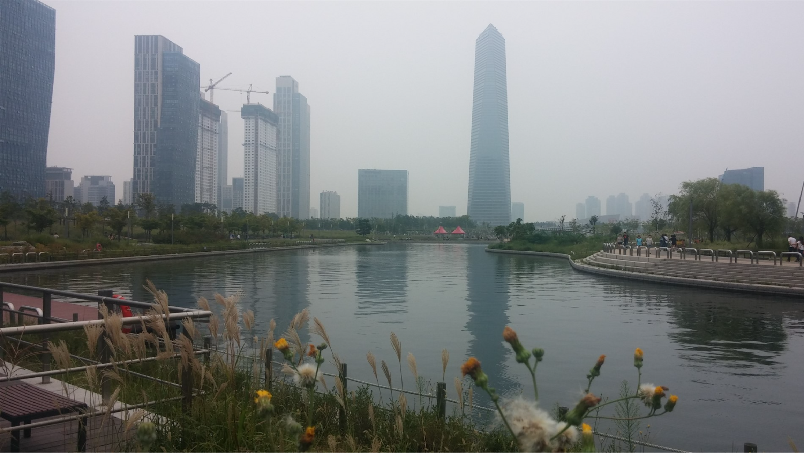
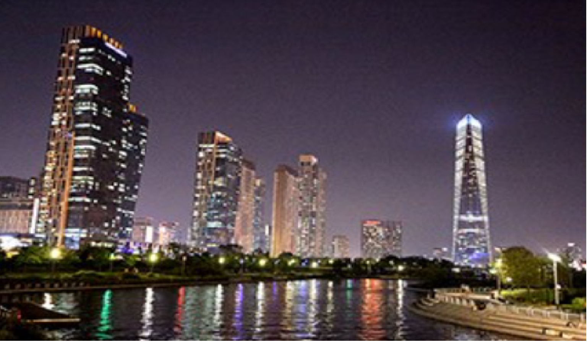

센트럴파크
- 송도 센트럴파크
- 송도 센트럴파크(Songdo Central Park)는 대한민국 인천광역시 연수구 송도국제도시 국제업무지구에
위치한 대형 공원이며, 센트럴공원으로도 불린다. 인천 도시철도 1호선 센트럴파크역 인근에 자리잡고 있으며
송도국제도시의 일부분인 송도 국제업무지구의 중앙에 위치해 있다. 규모는 411,324m², 약 14만평이다.
이는 축구장 면적 56배 크기이며 여의도 공원의 2배 규모다. 하지만 송도 국제도시에 조성된 공원중 가장 큰
규모의 공원은 아니다.

센트럴파크
- 센트럴파크역
- 센트럴파크역(Central Park station, 센트럴파크驛)은 인천광역시 연수구 송도4동에 있는 인천 도시철도 1호선의 전철역이다.
부역명은 포스코건설이다. 이 역은 2009 인천세계도시축전이 열리는 동안에 인천세계도시축전(仁川世界都市祝典)을 부역명으로 사용하였다.
송도국제도시의 중심 관청인 인천경제자유구역청과 가장 가깝다.
센트럴파크
- G타워 공원 앞 전경
- G타워 전망대에서 전경을 감상했으니 이제 야경을 감상할 차례다. 공원을 가로질러 이스트보트하우스가 있는 동남쪽의 선셋 카페로 이동한다.
1층은 카누·카약·보트 선착장, 2층은 푸드카페, 3층은 전망 데크로 구성됐다.공원 위 하늘이 어두워질수록 지상의 건물들은 아름답게 반짝이기 시작한다.
상업용 빌딩들이 조명을 밝히는 것은 당연하고, 고층 아파트들도 옥상에서 조명 쇼를 펼친다. 초저녁 별빛과 인천국제공항을 오가는 비행기 불빛이 더해져 여행자의 가슴을 설레게 한다.
